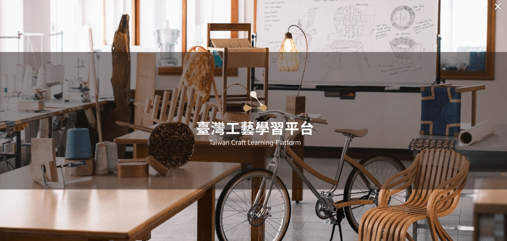
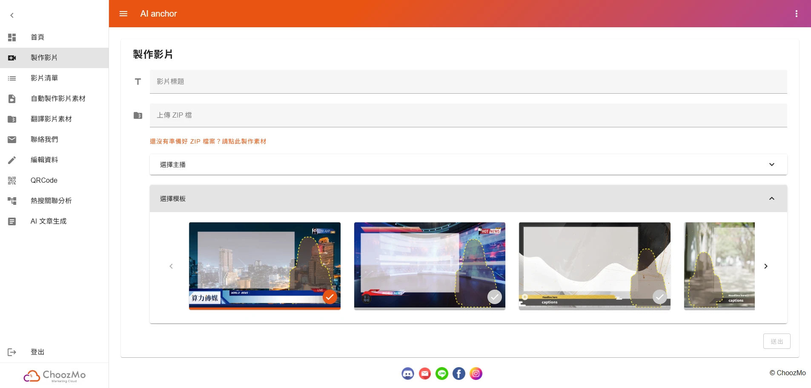
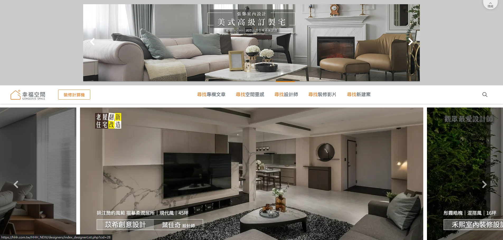
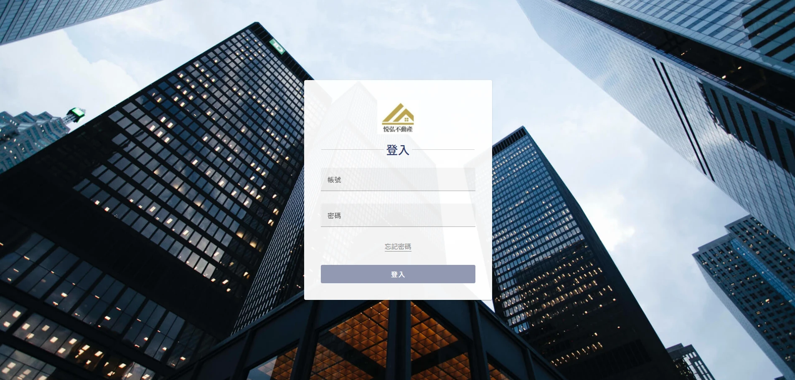

- 使用 Vue 3 開發，整合即時對話、語音（STT／TTS）與影片功能
- 使用 Axios 串接 RESTful API
- 使用 Vue Router、Pinia 進行路由與全域狀態管理
- 導入 i18n，內容、影片與語音可依語系動態切換
- 整合 Web Speech API、Recorder-core、QR Code、AR 導覽等多媒體功能
TAIPEI 101｜AI 智能客服
提供即時語音互動與導覽服務的 AI 智能客服系統
工藝中心｜臺灣工藝學習平台
提供講師上架與學員查詢課程的學習平台

- 使用 Vue 3 開發，整合課程送審、線上報名與據點管理功能
- 使用 Axios 串接 RESTful API
- 整合 Leaflet，支援定位搜尋、關鍵字查詢與地圖位置顯示
- 實作角色權限控制，依講師／學員提供對應介面與功能
- 導入 i18n，全站內容可切換為英文
國家衛生研究院｜健康小管家
多語系語音互動 AI 客服，支援角色切換與對話紀錄

- 使用 Vue 3 開發，整合即時對話、語音（STT／TTS）與影片功能
- 使用 Axios 串接 RESTful API
- 使用 Vue Router 取得路由參數，實作多版本與角色切換機制
- 導入 i18n，內容、影片與語音可依語系動態切換
- 整合 Token 驗證，取得病患資訊並載入歷史對話紀錄
AI 影片製作 SaaS
一鍵生成影片，完成後即時更新狀態並提供下載

- 使用 Vue 3 開發，整合素材上傳、模板選擇及影片生成
- 使用 Axios 串接 RESTful API
- 整合 Pinia 與 WebSocket，即時更新影片製作進度
- 導入 i18n，介面與提示訊息可依語系動態切換
- 使用 Vuetify 建構 UI 元件與版面配置
幸福空間｜官網
室內設計與影音平台首頁開發與維運

- 使用 Bootstrap 5 + jQuery 建置頁面版型與 UI 元件
- 整合 Slick Carousel，實作多組輪播與進度條
- 串接 Google Tag Manager，追蹤搜尋與點擊行為
- 串接 Google／Facebook 登入與會員互動功能
- 導入 SEO 結構化資料（JSON-LD）
不動產租賃管理系統
提供房仲管理租賃物件、房客資料與租約流程的一站式管理平台

- 使用 Vue 3 + Vuetify 開發，整合物件查詢與新增／編輯功能
- 使用 Axios 串接 RESTful API
- 使用 Vue Router 取得路由參數，判斷模式並載入對應資料
- 使用 Pinia 管理共用狀態與檔案上傳（圖片／附件）
- 實作帳號權限管理，依使用者角色動態呈現功能與介面